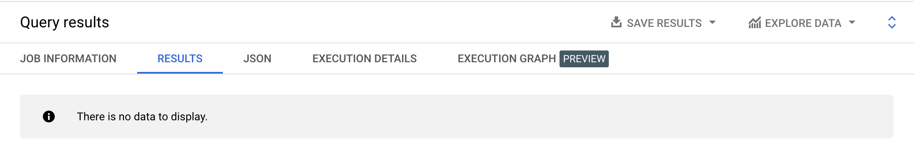
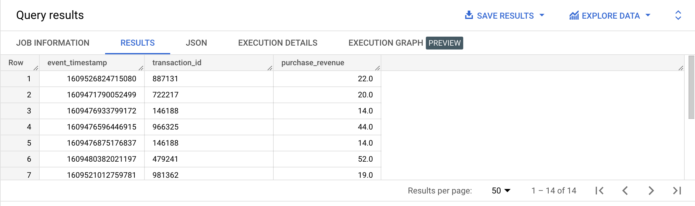

A user-defined function is a piece of reusable SQL code that can accepts columns as inputs and return a calculated result.
Temporary user-defined functions are only available in the query they are written in.
CREATE TEMP FUNCTION full_name(first_name STRING, last_name STRING)
RETURNS STRING AS (CONCAT(first_name, ' ', last_name));
SELECT id,
first_name,
last_name,
full_name(first_name, last_name) AS name
FROM bigquery-public-data.thelook_ecommerce.users;
Persistent user-defined functions are available across queries. They much be attached to a dataset.
CREATE OR REPLACE FUNCTION example_dataset.full_name(first_name STRING, last_name STRING)
RETURNS STRING AS (CONCAT(first_name, ' ', last_name));
SELECT id,
first_name,
last_name,
example_dataset.full_name(first_name, last_name) AS full_name
FROM bigquery-public-data.thelook_ecommerce.users;
Persistent user-defined functions can be deleted using the UI or the DROP FUNCTION statement.
A user-defined function can also return a scalar subquery.
CREATE TEMP FUNCTION count_users_by_country(countryParam STRING)
RETURNS INTEGER AS
(
( SELECT COUNT(*)
FROM bigquery-public-data.thelook_ecommerce.users
WHERE country = countryParam
)
);
SELECT count_users_by_country('France') AS france_users,
count_users_by_country('United States') AS us_users,
count_users_by_country('Germany') AS germany_users;
N/A
Create a persistent user-defined function that takes a decimal as parameter and return this number no more than 2 decimals.
SELECT example_dataset.pretty_number(12.455454524)| f0_ |
|---|
| 12.45 |
CREATE OR REPLACE FUNCTION example_dataset.pretty_number(number NUMERIC)
AS (ROUND(number, 2));
N/A
Write a user-defined function that replaces '(not set)' with NULL. It can be very useful when dealing with the Google Analytics 4 sample dataset.
SELECT example_dataset.nullify_not_set('(not set)')| f0_ |
|---|
| null |
CREATE OR REPLACE FUNCTION example_dataset.nullify_not_set(value STRING)
AS (REPLACE(value, '(not set)', NULL));
bigquery-public-data.ga4_obfuscated_sample_ecommerce.events_20210101
bigquery-public-data.ga4_obfuscated_sample_ecommerce.events_20210131
Write a persistent user-defined function that validates if a purchase event from the Google Analytics 4 sample data is valid. We consider a purchase event valid if:
SELECT event_timestamp,
ecommerce.transaction_id,
ecommerce.purchase_revenue
FROM bigquery-public-data.ga4_obfuscated_sample_ecommerce.events_20210131
WHERE example_dataset.is_valid_purchase(ecommerce.transaction_id, ecommerce.purchase_revenue) = TRUE;

SELECT event_timestamp,
ecommerce.transaction_id,
ecommerce.purchase_revenue
FROM bigquery-public-data.ga4_obfuscated_sample_ecommerce.events_20210101
WHERE example_dataset.is_valid_purchase(ecommerce.transaction_id, ecommerce.purchase_revenue) = TRUE;

CREATE OR REPLACE FUNCTION example_dataset.is_valid_purchase(transaction_id STRING, revenue FLOAT64)
RETURNS BOOL AS ( transaction_id IS NOT NULL
AND revenue IS NOT NULL
AND revenue > 0 );
bigquery-public-data.ga4_obfuscated_sample_ecommerce.events_20210101
Write a function that will strip the page_location event parameter of the Google Analytics 4 sample dataset. As parameters, we should have the page location (a url) and an option parameter which is defined as follow:
With option = ‘query parameters’
SELECT example_dataset.strip_url('https://shop.googlemerchandisestore.com/Google+Redesign/Apparel/Google+Google+Premium+Sunglasses?utm_campaign=new-year', 'query parameters')| f0_ |
|---|
| https://shop.googlemerchandisestore.com/Google+Redesign/Apparel/Google+Google+Premium+Sunglasses |
With option = ‘protocol’
SELECT example_dataset.strip_url('https://shop.googlemerchandisestore.com/Google+Redesign/Apparel/Google+Google+Premium+Sunglasses?utm_campaign=new-year', 'protocol')| f0_ |
|---|
| shop.googlemerchandisestore.com/Google+Redesign/Apparel/Google+Google+Premium+Sunglasses?utm_campaign=new-year |
With option = ‘domain’
SELECT example_dataset.strip_url('https://shop.googlemerchandisestore.com/Google+Redesign/Apparel/Google+Google+Premium+Sunglasses?utm_campaign=new-year', 'domain')| f0_ |
|---|
| /Google+Redesign/Apparel/Google+Google+Premium+Sunglasses?utm_campaign=new-year |
With option = ‘all’
SELECT example_dataset.strip_url('https://shop.googlemerchandisestore.com/Google+Redesign/Apparel/Google+Google+Premium+Sunglasses?utm_campaign=new-year', 'all')| f0_ |
|---|
| /Google+Redesign/Apparel/Google+Google+Premium+Sunglasses |
CREATE OR REPLACE FUNCTION example_dataset.strip_url(url STRING, option STRING)
RETURNS STRING AS
( CASE
WHEN option = 'query parameters' THEN REGEXP_REPLACE(url, r'(?i)\?.+$', '')
WHEN option = 'protocol' THEN REGEXP_REPLACE(url, r'(?i)^https?:\/\/', '')
WHEN option = 'domain' THEN REGEXP_REPLACE(url,r'(?i)(https?:\/\/)(\w+|\.{1})+\.([a-zA-Z0-9]){2,}', '')
WHEN option = 'all' THEN REGEXP_REPLACE(url, r'(?i)(https?:\/\/)(\w+|\.{1})+\.([a-zA-Z0-9]){2,}|\?.+$', '')
END
);